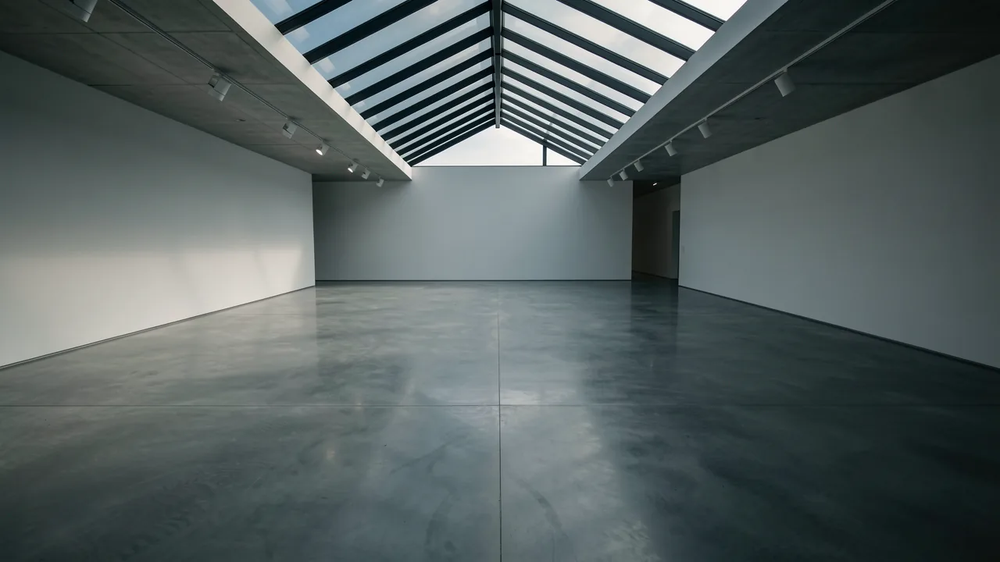

なぜドイツの政治がドクメンタの展示スペースを空っぽにしているのか
世界で最も権威のある美術展が、地政学的な緊張によって出展者が減少するという事態に陥った場合、それは単に評価が下がるという問題にとどまらない。

DeepSageの無料アカウントを作成して、記事を保存したり、クイズの結果を追跡したり、最新の情報をいち早く入手したりしましょう。
- Documenta 16 faces significant artist withdrawals.
- Political stances on Gaza are driving artistic boycotts.
- The era of 'neutral' global art platforms is ending.
- Curators now face unprecedented geopolitical diplomatic challenges.
ある美術展が、あまりにも「グローバル」な内容になりすぎて、意図せず巨大な政治声明のようなものになってしまうことはあり得るのだろうか。それは難しい問題であり、特に5年に一度開催される大規模な芸術祭であるドクメンタにとっては、その影響が大きい。ドクメンタは通常、世界の中心のように振る舞おうとするが、最近では、その中心が少し空虚に見える。

キュレーターの苦悩
グッゲンハイム美術館の重鎮であるナオミ・ベックウィス副館長兼チーフキュレーターが、ドクメンタ16の統括を任された。一見すると、これは理想的な仕事だ。世界で最も影響力のある現代アートのコレクションをキュレーションできるのだから。しかし、現実はそう甘くない。まるで、音楽が止まり、参加者が会場の政治的な姿勢に抗議している、緊迫感あふれる椅子取りゲームのようだ。
ベックウィスは、単に油絵に情熱を燃やすだけの人物ではない。彼女はアート業界の重鎮だ。次回の展覧会の準備を進める中で、彼女が直面しているのは、アートが単なる美的表現にとどまらず、もっと大きな意味を持つという現実である。 地政学的状況 開催国の立場、具体的には、ドイツがガザ紛争に対してどのような公式な立場をとっているのか。
「アートの世界」が「現実世界の」政治と出会うとき
私たちは、アートの世界が、国際的な外交という騒がしく、時に激しい現実からかけ離れた、純粋な思考と色彩の世界に存在するかのように振る舞うことを好みます。彫刻は単なる彫刻であり、ある国の外交政策の代弁者ではないと信じたいのです。しかし、ベクウィスが気づいているように、それは幻想にすぎません。
今後開催される展覧会への参加を、いくつかのアーティストが辞退したという報告が上がっています。その理由は？彼らは、ドイツが現在ガザに関してとっている政治的な立場に納得していないのです。それは、筆致に関する些細な意見の相違ではなく、自らの名前を、外交姿勢に同意できない国で開催されるフェスティバルに貸すことを拒否する、根本的な問題なのです。
複数のアーティストが、ドイツのガザに関する政治的立場との意見の相違を理由に、ドクメンタ16への参加を辞退したと報じられている。
これは、退屈なTwitterユーザーがただ話題にするだけの「キャンセルカルチャー」ではなく、より根本的な問題である。 グローバルなアートエコシステムアーティストが参加を取りやめると、展示は単に規模が小さくなるだけでなく、その本質的な性質まで変化してしまう。それは、「普遍的な概観」から「選りすぐりの作品を集めた閉鎖的な空間」へと変わるのだ。
それで、私たちには何が言えるのか？
「そもそも現代アートは好きじゃないし、なぜ私が気にする必要があるんだ？」と思うかもしれない。しかし、これは、今後起こりうる事態の警告サインなのだ。 文化施設 分断が進む世界において、いかにして乗り越えていくか。もし、世界で最も重要な舞台でさえ、開催国の政治的な理由によって参加者を維持できなくなるのであれば、それは国際的な協力の将来にとって何を意味するのだろうか。
この状況は、いわゆる「中立的」なグローバルプラットフォームの時代が終焉を迎えつつあることを示唆している。私たちは今、あらゆる展示会、あらゆるフェスティバル、あらゆる大規模な文化イベントが、政治的な対立が渦巻く危険な場となる時代に突入している。キュレーターにとっては、それは物流と外交という悪夢であり、アーティストにとっては、露出と良心の間で選択を迫られる状況である。そして私たち他の人々にとっては、共有するグローバル文化が徐々に崩壊していくのを目の当たりにする機会となる。
壁に何か面白いものを飾りたいだけだった人々にとっては、それは大きなプレッシャーとなるだろう。しかし2024年、壁は何かを語り始め、それは主に国際法や人権についてである。
だから、次に、大量の廃棄された電子機器が積み重なっているような、巨大で奇妙なインスタレーションを見たときは、それが資本主義に対する抽象的な批評であるとは限らないことを覚えておいてほしい。それは、アーティストが表現するのに最も安全だと感じた、たった一つの表現方法かもしれない。
- Documenta
- A prestigious contemporary art exhibition held in Kassel, Germany, every five years.
- Curator
- A person in charge of an art collection or exhibition, responsible for selecting and organizing works.
DeepSageの無料アカウントを作成して、記事を保存したり、クイズの結果を追跡したり、最新の情報をいち早く入手したりしましょう。
もしかしたら、これも気に入るかもしれません。